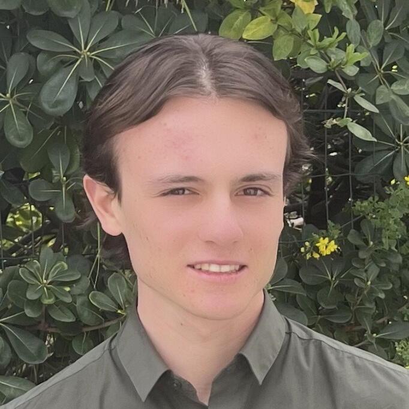

Je suis actuellement étudiant ingénieur à SeaTech Toulon après deux années de classe préparatoire PC au lycée Aux Lazaristes à Lyon.
Je m'intéresse notamment à l'hydrodynamique, à l'optimisation numérique et à l'analyse de données.
Diplôme d'ingénieur
École d’ingénieurs experte dans les sciences et technologies dédiées au secteur maritime.
Classe Préparatoire aux Grandes Écoles – Filière PC
Formation en mathématiques, physique et chimie. TIPE sur l'optimisation des matériaux pour les supercondensateurs.
Préparation anticipée aux CPGE
Préparation aux classes préparatoires scientifiques.
Baccalauréat général – Mention Bien
Spécialités Mathématiques et Physique-Chimie. Section européenne, certification Cambridge English (B2). Président du BDE.
Travaux académiques, comptes-rendus, projets de recherche et analyses de données réalisés au cours de ma formation.
Conception et développement d'un système de mesure pour l'observation littorale.
Voir le site web →Étude des mécaniques des fluides et applications aux structures maritimes.
Voir le projet →Approfondissement des phénomènes de résistance et de propulsion.
Voir le projet →Étude et contrôle du phénomène de Runge dans le cadre de l'interpolation polynomiale.
Voir le projet →Comparaison et implémentation des méthodes de résolution d'équations non-linéaires.
Voir le projet →Analyse des méthodes de quadrature numérique et étude des erreurs d'approximation.
Voir le projet →Modélisation entité-relation et implémentation SQL appliquée au réseau ferroviaire.
Voir le projet →Analyse exploratoire et statistique d'un jeu de données de diagnostics DPE.
Voir le Notebook →Travaux portant sur l'analyse et la modélisation mathématique de systèmes physiques.
Voir le projet →Optimisation des matériaux pour maximiser la densité énergétique (travail de CPGE PC).
Voir le projet →Vous souhaitez discuter d'un projet, d'une opportunité de stage ou simplement échanger ? N'hésitez pas à me contacter.
Vous pouvez me contacter directement par e-mail pour discuter d'opportunités de stage ou de projets.
Envoyer un e-mail